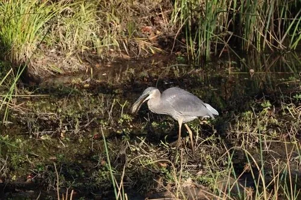

鱼类 · 动物界
乌鳢 Channa argus

中国常见的凶猛肉食鱼，体表有蛇状斑纹，能直接呼吸空气，离水可存活数日，常潜伏在水草中突袭鱼虾。
- 分类
- 门脊索动物门纲硬骨鱼纲目鲈形目科鳢科属鳢属
- 栖息环境
- 池塘、河沟、沼泽、水库、稻田与水草茂密的淤泥底质水体
- 地理分布
- 中国各大水系，以及俄罗斯远东、朝鲜半岛和日本
- 保护级别
- IUCN 无危（LC）
物种志
乌鳢体长一般 30–60 cm，最大可达 1 m，体重可达 5–7 kg。身体前部圆筒形，后部侧扁，头大而扁，口大、下颌突出，背鳍和臀鳍很长；体色灰黑，体侧有不规则黑色斑块，形似蛇皮，腹部灰白，鳞片较大。
它们分布于中国各大水系，以及俄罗斯远东、朝鲜半岛和日本，栖息于池塘、河沟、沼泽、水库与稻田，喜水草茂密、淤泥底质的环境。乌鳢是凶猛的肉食性鱼类，常潜伏在水草间，突然袭击小鱼、虾、蛙甚至水鸟幼雏。它具有鳃上器，可直接呼吸空气，因此在低氧水体中也能生存，离水后还能存活数日。繁殖期在 5–7 月，亲鱼在水草间筑浮巢，雌鱼产卵数千至上万粒，双亲护巢护幼。由于肉质鲜美，乌鳢是重要的养殖鱼类。
形态与习性
- 食性小鱼、虾、蛙及水鸟幼雏
- 体长一般 30–60 cm，最大约 1 m
- 体重可达 5–7 kg
- 繁殖5–7 月筑浮巢，产卵数千至上万粒
- 呼吸具鳃上器，可直接呼吸空气
- 寿命约 8–10 年
趣味知识
- 乌鳢有鳃上器，能直接呼吸空气，因此离水后还能存活数日。
- 它身上的黑色斑块像蛇皮，英文名 Snakehead 就是蛇头鱼的意思。
- 繁殖期亲鱼会筑浮巢并守护鱼卵和幼鱼，护幼行为十分明显。